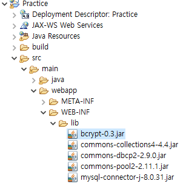
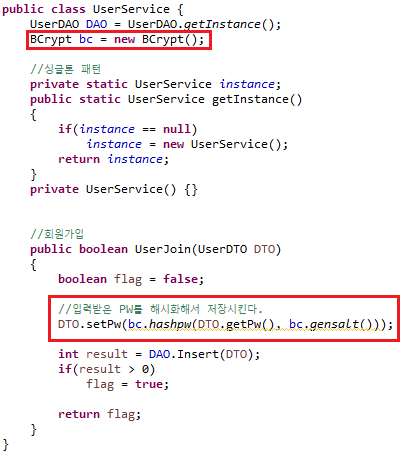
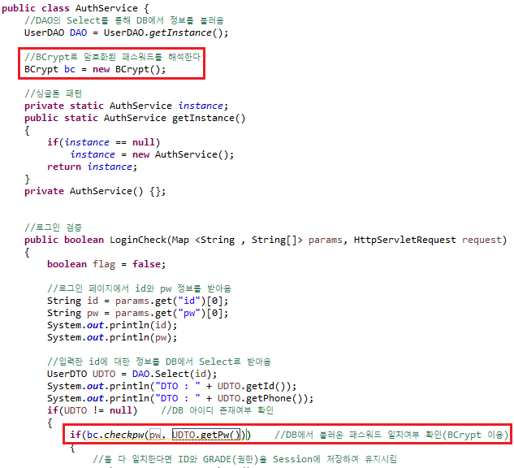
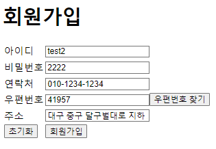
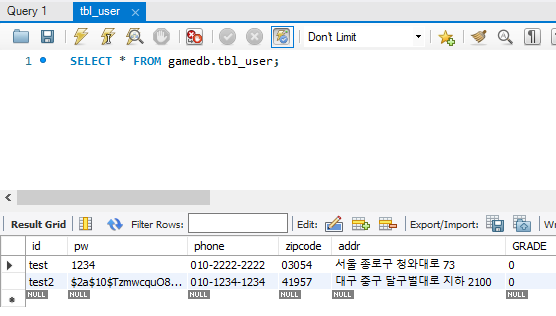

1. BCrypt jar 라이브러리 파일을 다운받아 lib에 넣어준다
다운받기

2. 기존의 UserService로 들어가서 회원가입시에 비밀번호 BCrpyt 처리를 해준다

3. AuthService도 마찬가지로 BCrypt처리된 패스워드로 검증하도록 바꿔준다

4. 신규 회원가입시 패스워드가 암호화가 된것을 MySQL에서 확인한다


5. 로그인도 정상적으로 가능한지 체크해보자